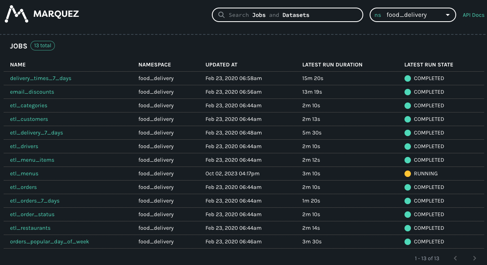

Metadata Source
Creating a data generator for Postgres tables and CSV file based on metadata stored in Marquez ( follows OpenLineage API).
Requirements
- 10 minutes
- Git
- Gradle
- Docker
Get Started
First, we will clone the data-caterer repo which will already have the base project setup required.
Marquez Setup
You can follow the README found here to help with setting up Marquez in your local environment. This comes with an instance of Postgres which we will also be using as a data store for generated data.
The command that was run for this example to help with setup of dummy data was ./docker/up.sh -a 5001 -m 5002 --seed.
Check that the following url shows some data like below once you click on food_delivery
from the ns drop down in the top right corner.

Postgres Setup
Since we will also be using the Marquez Postgres instance as a data source, we will set up a separate database to store the generated data in via:
Plan Setup
Create a new Java or Scala class.
- Java:
src/main/java/io/github/datacatering/plan/MyAdvancedMetadataSourceJavaPlanRun.java - Scala:
src/main/scala/io/github/datacatering/plan/MyAdvancedMetadataSourcePlanRun.scala
Make sure your class extends PlanRun.
We will enable generate plan and tasks so that we can read from external sources for metadata and save the reports under a folder we can easily access.
Schema
We can point the schema of a data source to our Marquez instance. For the Postgres data source, we will point to a
namespace, which in Marquez or OpenLineage, represents a set of datasets. For the CSV data source, we will point to
a specific namespace and dataset.
Single Schema
The above defines that the schema will come from Marquez, which is a type of metadata source that contains information
about schemas. Specifically, it points to the food_delivery namespace and public.categories dataset to retrieve the
schema information from.
Multiple Schemas
We now have pointed this Postgres instance to produce multiple schemas that are defined under the food_delivery
namespace. Also note that we are using database food_delivery in Postgres to push our generated data to, and we have
set the number of records per sub data source (in this case, per table) to be 10.
Run
Let's try run and see what happens.
cd ..
./run.sh
#input class MyAdvancedMetadataSourceJavaPlanRun or MyAdvancedMetadataSourcePlanRun
#after completing
docker exec marquez-db psql -Upostgres -d food_delivery -c 'SELECT * FROM public.delivery_7_days'
It should look something like this.
order_id | order_placed_on | order_dispatched_on | order_delivered_on | customer_email | customer_address | menu_id | restaurant_id | restaurant_address
| menu_item_id | category_id | discount_id | city_id | driver_id
----------+-------------------------+-------------------------+-------------------------+--------------------------------+----------------------------------------------------------+---------+---------------+---------------------------------------------------------------
---+--------------+-------------+-------------+---------+-----------
38736 | 2023-02-05 06:05:23.755 | 2023-09-08 04:29:10.878 | 2023-09-03 23:58:34.285 | april.skiles@hotmail.com | 5018 Lang Dam, Gaylordfurt, MO 35172 | 59841 | 30971 | Suite 439 51366 Bartoletti Plains, West Lashawndamouth, CA 242
42 | 55697 | 36370 | 21574 | 88022 | 16569
4376 | 2022-12-19 14:39:53.442 | 2023-08-30 07:40:06.948 | 2023-03-15 20:38:26.11 | adelina.balistreri@hotmail.com | Apt. 340 9146 Novella Motorway, East Troyhaven, UT 34773 | 66195 | 42765 | Suite 670 8956 Rob Fork, Rennershire, CA 04524
| 26516 | 81335 | 87615 | 27433 | 45649
11083 | 2022-10-30 12:46:38.692 | 2023-06-02 13:05:52.493 | 2022-11-27 18:38:07.873 | johnny.gleason@gmail.com | Apt. 385 99701 Lemke Place, New Irvin, RI 73305 | 66427 | 44438 | 1309 Danny Cape, Weimanntown, AL 15865
| 41686 | 36508 | 34498 | 24191 | 92405
58759 | 2023-07-26 14:32:30.883 | 2022-12-25 11:04:08.561 | 2023-04-21 17:43:05.86 | isabelle.ohara@hotmail.com | 2225 Evie Lane, South Ardella, SD 90805 | 27106 | 25287 | Suite 678 3731 Dovie Park, Port Luigi, ID 08250
| 94205 | 66207 | 81051 | 52553 | 27483
You can also try query some other tables. Let's also check what is in the CSV file.
$ head docker/sample/csv/part-0000*
menu_item_id,category_id,discount_id,city_id,driver_id,order_id,order_placed_on,order_dispatched_on,order_delivered_on,customer_email,customer_address,menu_id,restaurant_id,restaurant_address
72248,37098,80135,45888,5036,11090,2023-09-20T05:33:08.036+08:00,2023-05-16T23:10:57.119+08:00,2023-05-01T22:02:23.272+08:00,demetrice.rohan@hotmail.com,"406 Harmony Rue, Wisozkburgh, MD 12282",33762,9042,"Apt. 751 0796 Ellan Flats, Lake Chetville, WI 81957"
41644,40029,48565,83373,89919,58359,2023-04-18T06:28:26.194+08:00,2022-10-15T18:17:48.998+08:00,2023-02-06T17:02:04.104+08:00,joannie.okuneva@yahoo.com,"Suite 889 022 Susan Lane, Zemlakport, OR 56996",27467,6216,"Suite 016 286 Derick Grove, Dooleytown, NY 14664"
49299,53699,79675,40821,61764,72234,2023-07-16T21:33:48.739+08:00,2023-02-14T21:23:10.265+08:00,2023-09-18T02:08:51.433+08:00,ina.heller@yahoo.com,"Suite 600 86844 Heller Island, New Celestinestad, DE 42622",48002,12462,"5418 Okuneva Mountain, East Blairchester, MN 04060"
83197,86141,11085,29944,81164,65382,2023-01-20T06:08:25.981+08:00,2023-01-11T13:24:32.968+08:00,2023-09-09T02:30:16.890+08:00,lakisha.bashirian@yahoo.com,"Suite 938 534 Theodore Lock, Port Caitlynland, LA 67308",69109,47727,"4464 Stewart Tunnel, Marguritemouth, AR 56791"
Looks like we have some data now. But we can do better and add some enhancements to it.
What if we wanted the same records in Postgres public.delivery_7_days to also show up in the CSV file? That's where we
can use a foreign key definition.
Foreign Key
We can take a look at the report (under docker/sample/report/index.html) to see what we need to do to create the
foreign key. From the overview, you should see under Tasks there is a my_postgres task which has
food_delivery_public.delivery_7_days as a step. Click on the link for food_delivery_public.delivery_7_days and it
will take us to a page where we can find out about the fields used in this table. Click on the Fields button on the
far right to see.
We can copy all of a subset of fields that we want matched across the CSV file and Postgres. For this example, we will take all the fields.
val foreignCols = List("order_id", "order_placed_on", "order_dispatched_on", "order_delivered_on", "customer_email",
"customer_address", "menu_id", "restaurant_id", "restaurant_address", "menu_item_id", "category_id", "discount_id",
"city_id", "driver_id")
val myPlan = plan.addForeignKeyRelationships(
csvTask, foreignCols,
List(foreignField(postgresTask, "food_delivery_public.delivery_7_days", foreignCols))
)
val conf = ...
execute(myPlan, conf, postgresTask, csvTask)
Notice how we have defined the csvTask and foreignCols as the main foreign key but for postgresTask, we had to
define it as a foreignField. This is because postgresTask has multiple tables within it, and we only want to define
our foreign key with respect to the public.delivery_7_days table. We use the step name (can be seen from the report)
to specify the table to target.
To test this out, we will truncate the public.delivery_7_days table in Postgres first, and then try run again.
docker exec marquez-db psql -Upostgres -d food_delivery -c 'TRUNCATE public.delivery_7_days'
./run.sh
#input class MyAdvancedMetadataSourceJavaPlanRun or MyAdvancedMetadataSourcePlanRun
docker exec marquez-db psql -Upostgres -d food_delivery -c 'SELECT * FROM public.delivery_7_days'
order_id | order_placed_on | order_dispatched_on | order_delivered_on | customer_email |
customer_address | menu_id | restaurant_id | restaurant_address | menu
_item_id | category_id | discount_id | city_id | driver_id
----------+-------------------------+-------------------------+-------------------------+------------------------------+-------------
--------------------------------------------+---------+---------------+--------------------------------------------------------+-----
---------+-------------+-------------+---------+-----------
53333 | 2022-10-15 08:40:23.394 | 2023-01-23 09:42:48.397 | 2023-08-12 08:50:52.397 | normand.aufderhar@gmail.com | Apt. 036 449
27 Wilderman Forge, Marvinchester, CT 15952 | 40412 | 70130 | Suite 146 98176 Schaden Village, Grahammouth, SD 12354 |
90141 | 44210 | 83966 | 78614 | 77449
Let's grab the first email from the Postgres table and check whether the same record exists in the CSV file.
$ cat docker/sample/csv/part-0000* | grep normand.aufderhar
90141,44210,83966,78614,77449,53333,2022-10-15T08:40:23.394+08:00,2023-01-23T09:42:48.397+08:00,2023-08-12T08:50:52.397+08:00,normand.aufderhar@gmail.com,"Apt. 036 44927 Wilderman Forge, Marvinchester, CT 15952",40412,70130,"Suite 146 98176 Schaden Village, Grahammouth, SD 12354"
Great! Now we have the ability to get schema information from an external source, add our own foreign keys and generate data.
Check out the full example under MetadataSourcePlanRun in the example repo.